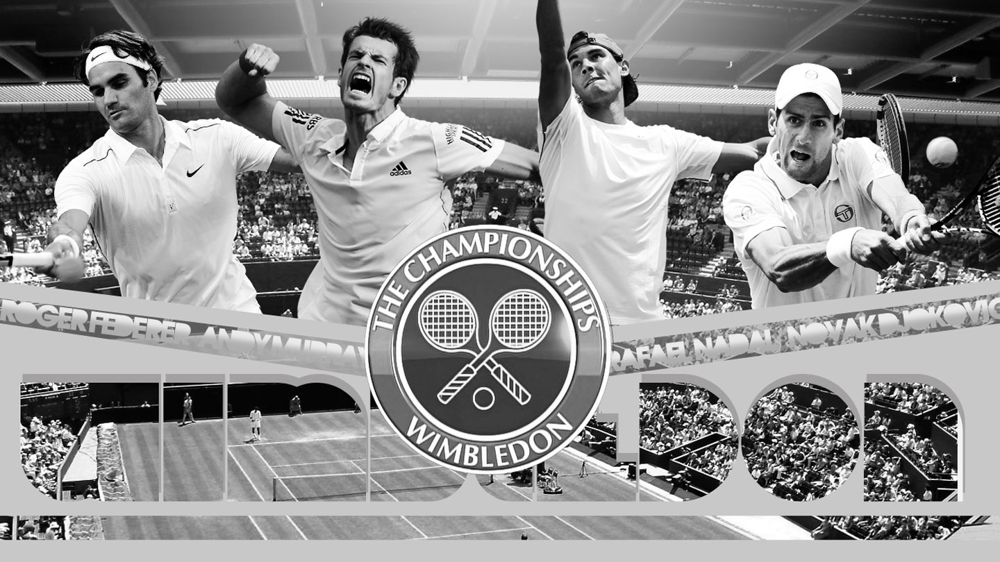
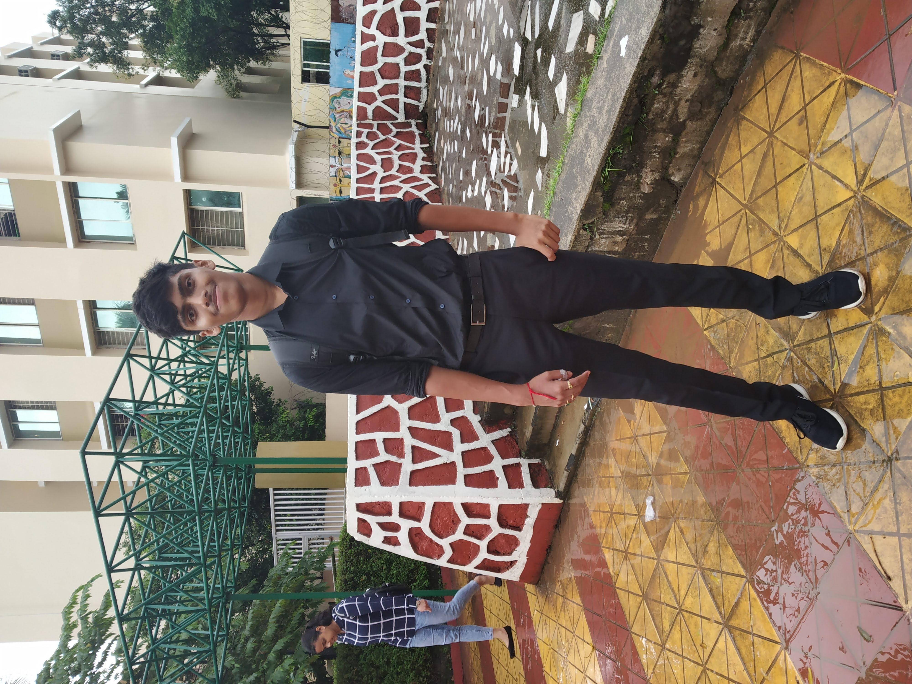

TENNIS & !nteresting Facts
Copyright Let us first learn something about tennis....
Tennis is an outdoor sport which is played in a tennis coart. It is a very physically demanding sport which provides many profits such as good mental and physical health etc...
So, we can make out that tennis has four pillars i.e. Physical, Mental, Technical and Tactical.
TENNIS
Now we face a popular question that what kind of strokes are present in this sport....?
Let us see....
- Forehand
- Backhand
- Volley
- Service
- Smash
- Slice
- Drop
- Lob
The most popular & common stroke is forehand which we are gonna analyse.
Basic steps to hit a good forehand are:-
- Complete body turn
- Shoulder and racket back together
- Early swing to catch the ball at correct place
- Follow through and catching the racket at non-playing hand
- Recovery
Also, do you know about service and return of serve.
- Service
- Service is the most important part of tennis as it starts every alternative game. A good service leads to the boost of confidence, it helps in holding the service game & thus takes up almost 50% of tennis match.
- Return of serve
- The return of serve is a challenge of how we react to the opponent's serve, it almost depends on how positive and accurate we are while returning the ball at play.
Let's have some pictures of current legends of ATP Tennis.

For More pictures, click the following links:-
Novak Djokovic
Producer- Prateek Bose

Contact no.- 9644146555
You can send comments at prateekbose25@gmail.com
{kind=link}